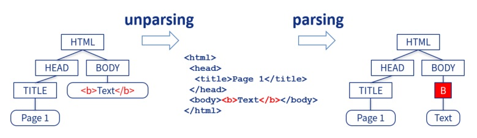
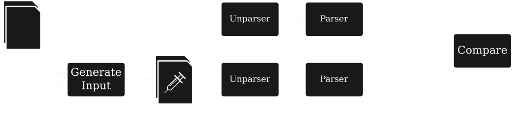

Language-agnostic Injection Detection
Lars Hermerschmidt, Andreas Straub, Goran Piskachev
injections grow on trees

Shotgun Unparser
if (recursive || print_dir_name)
{
if (!first)
DIRED_PUTCHAR ('\n');
first = false;
DIRED_INDENT ();
PUSH_CURRENT_DIRED_POS (&subdired_obstack);
dired_pos += quote_name (stdout, realname ? realname : name,
dirname_quoting_options, NULL);
PUSH_CURRENT_DIRED_POS (&subdired_obstack);
DIRED_FPUTS_LITERAL (":\n", stdout);
}
https://github.com/wertarbyte/coreutils/blob/master/src/ls.c
mkdir "1
1"
mkdir 2
ls | wc -l
Why do injections exist?
- Shotgun Unparsers cause Injection Vulnerabilities
But why?
- Correct Unparser Generators are not used
But why?
- IO is "soo simple", let's just use the core libs
But why?
- Core libs don't provide secure input handling
But why?
- Lacking Awareness for the problem
But why?
- Core libs don't provide secure input handling
Related Work
- Language specific static and dynamic analysis:
SQLi, XSS, ... are well known
- Language agnostic dynamic aka fuzzing:
Parsers are known to be broken
- AUTOGRAM uses dynamic taint tracking:
Grammar reconstruction from a given parser
Our contribution: Language agnostic detection of injections for textual languages
Awareness
Detection is never complete; Use a constructive approach like McHammerCoder
to solve the injection problem.
The Solution
Show, don't tell
Problem space
- Detecting unparsers
- Identifying injections in a given unparser
- Generate attacks
- Extract full grammar
Approach Overview
- Guided fuzzing using language keyword information
- Keywords are extracted from unparse trees (UPTs)
- UPTs are inferred automatically using dynamic program analysis

UPTs and Keywords

- Keywords have no origin in any input
- They are created by the unparser
- Their location in the UPT shows where (structurally) they are valid in the language
Fuzzing
- generate targeted injection candidates based on keywords
- example: "break out" of string-enclosing quotation marks
- evaluate injection success by comparing parse trees
- run both original input and modified input through unparser-parser round-trip
- compare structures of resulting parse trees
- if the parse tree changed, an injection was found

Results
- Promising results in case studies
- very accurate UPTs
- found (implanted) injection vulnerabilities
- structural keyword information can significantly improve fuzzing
- caveat: not a quantitative evaluation
- Fuzzing automatically yields PoC exploits
Key Observations
- "Recursive descent unparsers" exist
- common in ad-hoc implementations
- Difference to Taint Tracking:
- leveraging structural information to identify keywords and their scope
- Requires structural variability in unparser outputs
- poor UPTs in "template-based" unparsers
- reduced to common taint tracking
- better use a sample output for mutation fuzzing
Conclusion
Language-agnostic Injection Detection
- works for recursive descent unparsers
- use keywords from UPTs in fuzzing
Awareness
- Creating output is not just writing an array of bytes
- Injections might exist in all your unparses
Call to Action
Every programming language's core library deserves an (un)parser